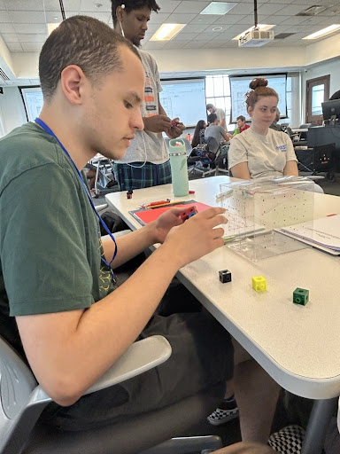
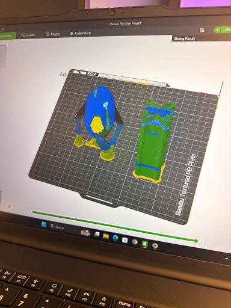
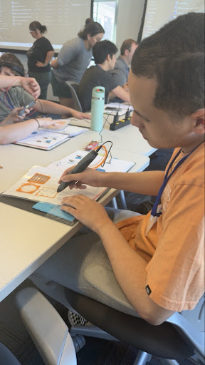
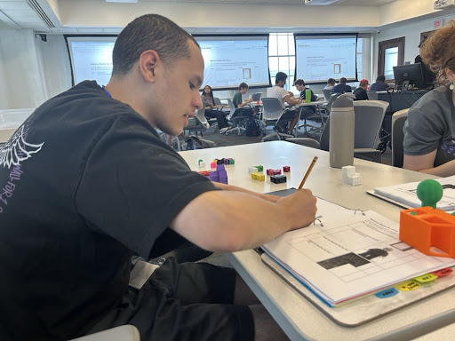
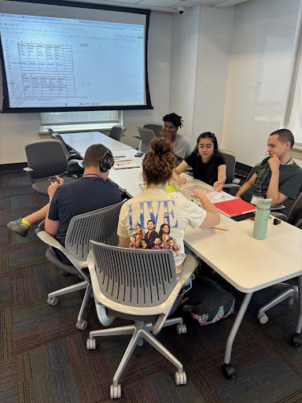
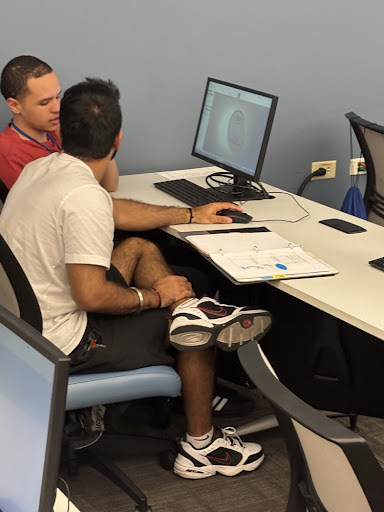
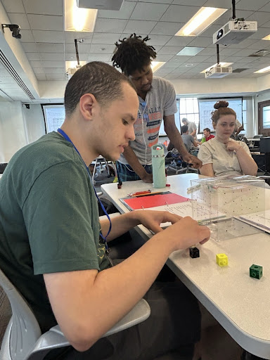
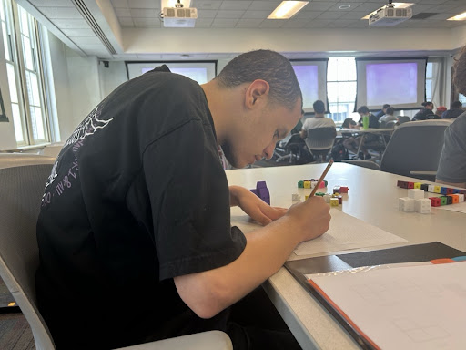

Welcome to my official STEM Summer Camp Portfolio at the University of Cincinnati. Over 6 intensive weeks, I designed 3D models from scratch, mastered SolidWorks and Bambu Studio slicers, and created complex CAD projects like my featured 3D Fish!

18 Y/O Lead Designer & Student
"Turning creative ideas into 3D printable reality at UC."
I am passionate about 3D modeling, spatial prototyping, CAD engineering tools, and bringing physical creations to life using modern additive manufacturing (3D printing).
I enrolled in the STEM Summer Camp at the University of Cincinnati to gain real-world experience on a college campus, learn professional software like SolidWorks, and explore tech careers.
My favorite STEM topic is 3D Designing. I hoped to learn how to design complex structures from my own mind and properly slice them for high-precision 3D printing.
Three main core engineering skills developed over the six-week camp.
What I Learned: Building complex 3D shapes, manipulating geometries, and extruding features in SolidWorks.
How I Learned It: Designing daily models and creating my custom 3D Fish project.
Future Use: Utilizing CAD in future college classes and landing an engineering job!
What I Learned: Operating Bambu Studio slicer software, configuring tree supports, density, and wall layers.
How I Learned It: Preparing my 3D Fish for the Bambu Textured PEI Plate with customized supports.
Future Use: Rapid prototyping for physical gadgets, keychains, and custom toys.
What I Learned: Orthographic views (Top, Front, Side), coded plans, isometric sketching, and 3D pen modeling.
How I Learned It: Snapping cube building, clear projection box challenges, and grid pen exercises.
Future Use: Visualizing complex mechanical blueprints before starting software design.
Independent CAD Design Project created from scratch during camp

Ellipsoids / Spheres for main body, custom dorsal & tail fins, side fins, and eye socket cuts.
SolidWorks CAD (Extrusions, Fillets, Mirroring) + Bambu Studio Slicer (Tree Supports & PEI Plate Setup).
"Because it's super cool and it's 100% my own original creation designed from my imagination!"
"I want to add 3D printed water bubbles floating out of the fish's mouth!"
Tap any photo to open full resolution

3D Pen PracticeDrawing 2D grid templates and building upwards into physical structures.

Orthographic DrawingsBuilding spatial reasoning skills using snapping block combinations.

Team DesignWorking together with Rajat and group members on complex 3D view angles.

CAD InstructionRefining models with guidance on extrusions, fillets, and alignments.

Cube AssemblyConnecting blocks to test spatial visualization and multi-angle views.

Grid SketchingMastering precise line work on engineering grid templates.
My work improved immensely through daily practice in CAD software and getting comfortable with the tools step by step.
I can now design full 3D models completely from my own head and turn them into print-ready files!
Navigating SolidWorks interfaces, setting up extrusions, and preparing slicer bed orientations.
"IMAGINING" – Visualizing complex 3D shapes in my head before drawing or modeling them in CAD was really challenging at first.
"Taking a break when needed, taking a step back, and working in stages."
Rajat (Camp Mentor) helped guide my design thinking!
"I can make custom toys, keychains, and physical models from my ideas!"
When presenting to camp staff, classmates, and family, keep these key points in mind: